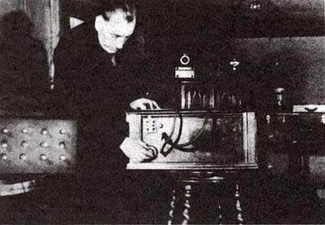
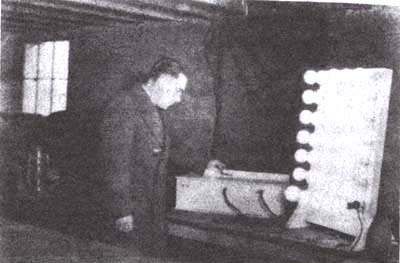
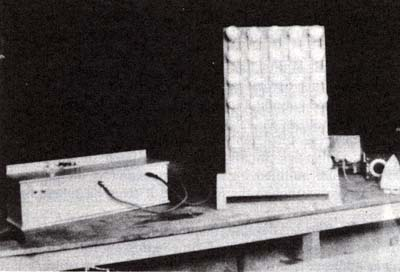

| The Tom Bearden Website
EXCERPTED FROM TOM BEARDEN'S "EXCALIBUR BRIEFING" |
| The Tom Bearden Website
EXCERPTED FROM TOM BEARDEN'S "EXCALIBUR BRIEFING" |
|
 T. Henry Moray makes some final adjustments in tuning his radiant energy device to tap zero-point vacuum energy THE MORAY RADIANT ENERGY DEVICE In the early 1900's, Dr. T. Henry Moray of Salt Lake City produced his first device to tap energy from the metafrequency oscillations of empty space itself. Eventually Moray was able to produce a free energy device weighing sixty pounds and producing 50,000 watts of electricity for several hours. Ironically, although he demonstrated his device repeatedly to scientists and engineers, Moray was unable to obtain funding to develop the device further into a useable power station that would furnish electrical power on a mass scale. As a boy, Moray had been deeply inspired by the greatest electrical genius of all time, Nikola Tesla. His imagination was especially fired by Tesla's claims to have knowledge of an energy source greater than ordinary electricity, and by Tesla's emphasis on frequencies as the stuff of the universe. When Moray finished high school in Salt Lake City, he went abroad to study, and took resident examinations for his doctorate in electrical engineering from the University of Uppsala, Sweden, during the period 1912-14. Returning home, his diploma and credentials were interrupted by World War I, and the University mailed him these items in 1918 after the war. Shortly thereafter, Moray produced his first elementary device that delivered measureable electrical power, and he continued to work diligently on energy devices when he had time. In the 1920's and 1930's he steadily improved his devices, particularly his detector tube, the only real secret of the device according to Moray himself. In his book, The Sea of Energy in Which the Earth Floats, Moray presents documented evidence that he invented the first transistor-type valve in 1925, far ahead of the of officially recognized discovery of the transistor. In his free energy detector tube Moray apparently used, inside the tube itself, a variation of this transistor idea—a small rounded pellet of a mixture of triboluminescent zinc, a semiconductor material, and a radioactive or fissile material His patent application (for which a patent has never been granted) was filed on July 13, 1931, long before the advent of the Bell Laboratories' transistor.
 Here the Moray radiant energy device is providing free power to 35 100-watt lamps and a 1200-watt iron. In test after test Moray demonstrated his radiant energy device to electrical engineering professors, congressmen, dignitaries, and a host of other visitors to his laboratory. Once he even took the device several miles out in the country, away from all power lines, to prove that he was not simply tuning in to energy being clandestinely radiated from some other part of his laboratory. Several times he allowed independent investigators to completely disassemble his device and reassemble it, then reactivate it themselves. In all tests, he was successful in demonstrating that the device could produce energy output without any appreciable energy input. According to exhaustive documentation, no one was ever able to prove that the device was fraudulent or that Moray had not accomplished exactly what he claimed. On the other hand, the records are full of signed statements from physicists, electrical engineers, and scientists who came to the Moray laboratory as doubting Thomases and left with the complete conviction that Moray had indeed succeeded in tapping a universal source of energy that could produce free electrical power. But in the face of all of this, the U.S. Patent Office refused to grant Moray a patent, first, because his device used a cold cathode in the tubes (the patent examiner asserted it was common knowledge that a heated cathode v as necessary to obtain electrons) and, second, because he failed to identify the source of the energy. All sorts of irrelevant patents and devices were also presented as being infringed upon or duplicated by Moray's work. Each of these objections was patiently answered and nullified by Moray; nonetheless, the patent has still not been issued to this day, although the Morays still keep the patent application current. One of Moray's efforts to develop the machine involved an association with the Rural Electrification Agency for a short time before World War II. At that time, the R.E.A. was apparently infiltrated by Communist sympathizers and high level officials of a decidedly pinkish tinge. These officials continually urged Moray to turn over all details of his device to the Soviet Union, and even arranged the visit of high-level Soviet scientists to the Moray laboratory to see the device in operation On the initiative of the Communist-infiltrated R.E.A., one person—let us call him "Z"—spent about two months in Moray's laboratory, and succeeded in worming his way into Moray's full confidence. Moray eventually disclosed most of the details of the construction of his special valve to ''Z"—the only person in whom Moray ever completely confided. There is strong reason to believe that "Z" was a Soviet agent, and that this is where the Soviets first obtained the impetus to develop the hyperspace amplifiers later used in their psychotronic weapons. However, Moray became quite alarmed at the continued attempts of his R.E.A. contacts to get the device into the hands of the Russians. He eventually concluded that he had become involved with a governmental group filled with radicals and reactionaries. Moray became concerned that fifth column activity was actually directed against him in an attempt to steal his device. Quotes from the Salt Lake Tribune of December 2, 1941, attributed to Representative Thomas D. Winter, imply that Moray's suspicions of the R.E.A. were well founded, since Representative Winter called for a full-scale investigation of the R.E.A. on the grounds of Communist infiltration. Indeed, Moray was wounded by gunshot in his own laboratory on March 2, 1940, which seems to suggest that his fears and suspicions were based on fact. Moray severed his association with the R.E.A. in February 1941. However, his basic unit had been destroyed by a hammerslinging witness in 1939; it is not clear whether or not this was the work of "Z" or of someone else. According to his son, John Moray, the man who broke his unit, as well as other interested groups, wanted complete disclosure of the materials and construction — nothing more or less. John Moray, who operates the Research Institute in Salt Lake City, has been trying to continue his father's work since the basic unit was destroyed. Dr. Moray himself died in May 1974. According to John Moray, highly energetic cosmic rays from space are tapped by the machine, which is in subharmonic resonance with this high-frequency energy level, and it converts this energy level into a usable form of electricity. However, John Moray's use of the term "cosmic ray" is not necessarily the same as that of modern physics, but in fact is the same as the present concept of "zero-point" energy of vacuum. T. Henry Moray envisioned all space filled with tremendously high frequency vibrations carrying vast and incalculable amounts of pure raw energy. He envisioned the dynamic Universe as a turbulent source of great energy, just as the ocean waves carry energy throughout the earth. This was also the vision of Tesla, and after him of Clifford and Einstein, who turned the attention of general relativity to the problem of the nature of the vacuum itself. Clifford and Einstein founded a branch of physics that has come to be known as quantum geometrodynamics, the study of energetic change that occurs in little pieces, including the concept that very small lengths of space, or pure vacuum, themselves oscillate at great frequency and with great energy. In Moray's day relativity was still a strange and unproven branch of physics, suspected and rejected by most of the physicists of the day, and quantum physics was still in the process of being worked out. There was no theory whatsoever predicting that empty space itself not only contained prodigious quantities of energy, but in fact was prodigious quantities of energy. But slowly, over the decades, the picture has changed, and the modern followers of quantum geometrodynamics assert the truth of Tesla's original vision. Today we know that one cubic centimeter of pure vacuum contains enough energy to condense into 1080 – 10120 grams of matter! Thus the major part of Moray's thesis—that vacuum itself contains unlimited energy—is vindicated today. In this sense empty space is like a gigantic, restless ocean, and Moray's free energy "tapping" device is no more mysterious than the water wheel. In other words, his thesis that the energy is there to be tapped is correct; it only awaits a practical method to tap it in order to solve the energy problems of mankind forever.
 Once tuned in, the power continues and is free for the taking. Moray thus is vindicated as a man ahead of his time, who simply built a device before any theory existed to explain its operation. Moray met with constant opposition, and his life and that of his family was anything but pleasant. Certain pressure groups constantly tried to force him into selling for almost nothing, or to disclose the secrets of his valve's construction. He was often attacked and he was sometimes shot at on the city streets. In fact, his life was threatened so often that he was forced to install bulletproof glass in his automobile. His laboratory was broken into, some of his components and papers were stolen, and his dogs were continually being killed. Moray was shot in his own laboratory, and he himself always carried a gun. Because he was harassed ceaselessly, over the years he became understandably suspicious and close-mouthed about his work. He sometimes greeted visitors at his desk with a loaded pistol lying on the desk within easy reach, and occasionally confirmed that he would not hesitate to shoot if he were attacked or threatened. One of his: greatest fears was that big interests would take up his invention and simply shelve it to keep it from benefiting the public. When large companies made him offers, he always demanded written guarantees that the device would be put into production and sold to everyone, once it was developed. Moray also realized the potential of his devise as a weapon. He was fully aware that the only difference between a controlled energy device and an explosion is the rate of release of the energy. According to John Moray, his father received an offer to go to Japan in 1938 because he had built a deathray which operated off the device. According to John, a representative of the Japanese government came to the laboratory and offered a position to Moray, but he refused. Allegedly Moray had managed to rig the device so that it projected a ray of energy in a beam, and could kill mice instantly at over fifty feet. When radiated by the beam, the mice were carbonized immediately. They appeared frozen, but nothing was left except their shells, and they simply fell apart when touched. In one experiment Moray ran his device for 157 hours without any connection to external power sources, and produced over fifty kilowatts of power during the test. He also found that an additional fifty kilowatts could be added by simply providing another tap further back in the circuit. When he shut the device off from this test, he had proven once and for all that the device was generating electrical energy from free and natural sources without batteries or external power. During this test nothing in the machine heated up; instead, all parts of the circuit ran absolutely sold. This alone is totally unexplainable by ordinary electromagnetic theory, and it strongly implies the truth of Moray's assertion that the device simply collects the energy in each of its stages in a subharmonically resonant manner, in synchronization with the extremely high frequency cosmic oscillations. In other words, since the parts of the machine ran cold, it is clear that the energy was being simultaneously collected at each stage rather than being processed through the individual stages in serial order, since serial processing in the conventional electrical sense would lead to resistance heating of the circuit elements. Moray's device used twenty-nine stages of his special detector valves, which were difficult to produce, costing about five hundred dollars each. Only about one in four proved suitable for operation. He also had difficulty in obtaining sufficiently pure materials to make his special mixture for the pellet that enabled tube operation in a one-way gating fashion. Moray explained that his device was based on the discovery of a mixture that would act as a one-way gate for the high frequency oscillations of space, so that the energy could go through the material more readily in one direction than another. Thus it was like a one-way gate valve to an ocean wave; the energy "water" could flow in in each valve, but was prevented from flowing back out. The assemblage of multiple stages thus provided a series of collectors which contained enough energy to be useful. Theoretically there was no limit to the number of collectors that could be added, and so there appeared to be no limit to the energy that such a device could produce. |